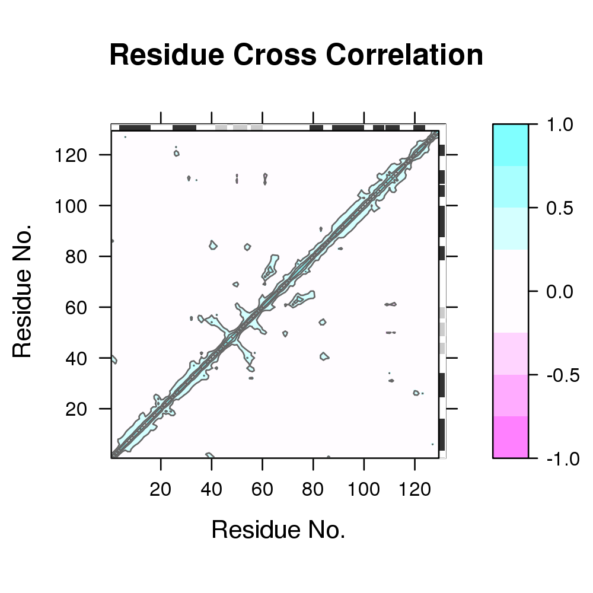

Biological Structure Analysis
### ### Examples from NMA Vignette ### ### Authors Lars Skjaerven ### Xin-Qiu Yao ### Barry J Grant ### require(bio3d); require(graphics); pause <- function() { cat("Press ENTER/RETURN/NEWLINE to continue.") readLines(n=1) invisible() } ############################################# ## # ## Basic usage # ## # ############################################# ### Read PDB and Calculate Normal Modes pdb <- read.pdb("1hel")Note: Accessing online PDB file HEADER HYDROLASE(O-GLYCOSYL) 10-JAN-92 1HELmodes <- nma(pdb)Building Hessian... Done in 0.075 seconds. Diagonalizing Hessian... Done in 0.135 seconds.pause()Press ENTER/RETURN/NEWLINE to continue.### Print a summary print(modes)Call: nma(pdb = pdb) Class: VibrationalModes (nma) Number of modes: 387 (6 trivial) Frequencies: Mode 7: 0.018 Mode 8: 0.019 Mode 9: 0.024 Mode 10: 0.025 Mode 11: 0.028 Mode 12: 0.029 + attr: modes, frequencies, force.constants, fluctuations, U, L, xyz, mass, temp, triv.modes, natoms, callpause()Press ENTER/RETURN/NEWLINE to continue.### Plot the nma object for a quick overview plot(modes)pause()Press ENTER/RETURN/NEWLINE to continue.### Calculate cross-correlations cm <- dccm(modes)| |==================================================== | 74% | |==================================================== | 75% | |===================================================== | 75% | |===================================================== | 76% | |====================================================== | 77% | |====================================================== | 78% | |======================================================= | 78% | |======================================================= | 79% | |======================================================== | 79% | |======================================================== | 80% | |======================================================== | 81% | |========================================================= | 81% | |========================================================= | 82% | |========================================================== | 82% | |========================================================== | 83% | |=========================================================== | 84% | |=========================================================== | 85% | |============================================================ | 85% | |============================================================ | 86% | |============================================================= | 86% | |============================================================= | 87% | |============================================================= | 88% | |============================================================== | 88% | |============================================================== | 89% | |=============================================================== | 89% | |=============================================================== | 90% | |=============================================================== | 91% | |================================================================ | 91% | |================================================================ | 92% | |================================================================= | 92% | |================================================================= | 93% | |================================================================= | 94% | |================================================================== | 94% | |================================================================== | 95% | |=================================================================== | 95% | |=================================================================== | 96% | |==================================================================== | 96% | |==================================================================== | 97% | |==================================================================== | 98% | |===================================================================== | 98% | |===================================================================== | 99% | |======================================================================| 99% | |======================================================================| 100%pause()Press ENTER/RETURN/NEWLINE to continue.### Plot correlation map plot(cm, sse=pdb)
pause()Press ENTER/RETURN/NEWLINE to continue.### Calculate modes with force field ANM modes.anm <- nma(pdb, ff="anm")Building Hessian... Done in 0.072 seconds. Diagonalizing Hessian... Done in 0.134 seconds.pause()Press ENTER/RETURN/NEWLINE to continue.### Investigate modes similarity with RMSIP r <- rmsip(modes, modes.anm) pause()Press ENTER/RETURN/NEWLINE to continue.### Plot RMSIP results plot(r, xlab="ANM", ylab="C-alpha FF")
pause()Press ENTER/RETURN/NEWLINE to continue.############################################# ## # ## Ensemble NMA # ## # ############################################# ### Set temp dir to store PDB files tmp.dir <- tempdir() ### Download a set of Kinase structures ids <- c("4b7t_A", "2exm_A", "1opj_A", "4jaj_A", "1a9u_A", "1tki_A") ### Download and split by chain ID raw.files <- get.pdb(ids, path=tmp.dir)Warning message: ids should be standard 4 character PDB-IDs: trying first 4 characters...pause()Press ENTER/RETURN/NEWLINE to continue.### Split PDB files by chain ID files <- pdbsplit( raw.files, ids, path=tmp.dir)| | | 0% | |============ | 17% | |======================= | 33% | |=================================== | 50% | |=============================================== | 67% | |========================================================== | 83% | |======================================================================| 100%pause()Press ENTER/RETURN/NEWLINE to continue.### Align structures pdbs <- pdbaln(files)Reading PDB files: /tmp/RtmpSa4CZG/4b7t_A.pdb /tmp/RtmpSa4CZG/2exm_A.pdb /tmp/RtmpSa4CZG/1opj_A.pdb /tmp/RtmpSa4CZG/4jaj_A.pdb /tmp/RtmpSa4CZG/1a9u_A.pdb /tmp/RtmpSa4CZG/1tki_A.pdb ...... Extracting sequences muscle -in /tmp/RtmpSa4CZG/file43b342041176 -out aln.fa -quiet -seqtype protein pdb/seq: 1 name: /tmp/RtmpSa4CZG/4b7t_A.pdb pdb/seq: 2 name: /tmp/RtmpSa4CZG/2exm_A.pdb pdb/seq: 3 name: /tmp/RtmpSa4CZG/1opj_A.pdb pdb/seq: 4 name: /tmp/RtmpSa4CZG/4jaj_A.pdb pdb/seq: 5 name: /tmp/RtmpSa4CZG/1a9u_A.pdb pdb/seq: 6 name: /tmp/RtmpSa4CZG/1tki_A.pdbpause()Press ENTER/RETURN/NEWLINE to continue.### View sequence identity summary( c(seqidentity(pdbs)) )Min. 1st Qu. Median Mean 3rd Qu. Max. 0.1800 0.2320 0.2785 0.3884 0.3530 1.0000pause()Press ENTER/RETURN/NEWLINE to continue.### Calculate modes of aligned proteins modes <- nma.pdbs(pdbs, fit=TRUE, outpath=NULL)| | | 0% | |============ | 17% | |======================= | 33% | |=================================== | 50% | |=============================================== | 67% | |========================================================== | 83% | |======================================================================| 100%pause()Press ENTER/RETURN/NEWLINE to continue.## Print a summary print(modes)Call: nma.pdbs(pdbs = pdbs, fit = TRUE, outpath = NULL) Class: enma Number of structures: 6 Attributes stored: - Root mean square inner product (RMSIP) - Aligned atomic fluctuations - Aligned eigenvectors (gaps removed) - Dimensions of x$U.subspace: 723x20x6 Coordinates were aligned prior to NMA calculations + attr: fluctuations, rmsip, U.subspace, full.nma, callpause()Press ENTER/RETURN/NEWLINE to continue.### Plot fluctuations plot(modes, pdbs, type="h")
pause()Press ENTER/RETURN/NEWLINE to continue.unlink(tmp.dir)